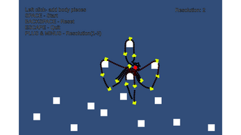

Coupled
A Unity add-on providing much needed functionality
Unity's physics engine boasts little to no built-in support for rope-like soft bodies. This project serves as a technical demo of a custom-built dynamic rope generator that has realistic physics, tension visualization, and breaking limits.
It further has an adjustable resolution that is only limited by the capabilities of Unity's physics engine. Allowing the ropes to be only as realistic as needed. This add-on can be used in any other project to accurately simulate rope-like bodies
The project was made as an game Desgin assignment, addressing Unity's shortcomings.
